クラスター分析
Cluster-Analysis
概要
アメリカの都市の過去3年分の平均気温データを使ってクラスター分析をしてみましょう。
まずはランダムに選択したデータを使い、階層的クラスター分析を行って、それを元に最適なクラスター分けを見つけたいと思います。 そのあと、分析の速いクラスター法である、K-means法クラスター分析を全体のデータに行います。
必要なOriginのバージョン: Origin 2020以降
階層的クラスター分析
- 新規プロジェクト、または、新規ワークブックを作成します。\Samples\Graphing\US Mean Temperature.datファイルをインポートします。
- D列からO列を選択します。
- 統計: 多変量解析: 階層的クラスター分析を選択してダイアログを開きます。
- 入力タブを開き、変数の隣にある三角形のボタン
 をクリックし、コンテキストメニュー内にある列の選択を選びます。
をクリックし、コンテキストメニュー内にある列の選択を選びます。
- 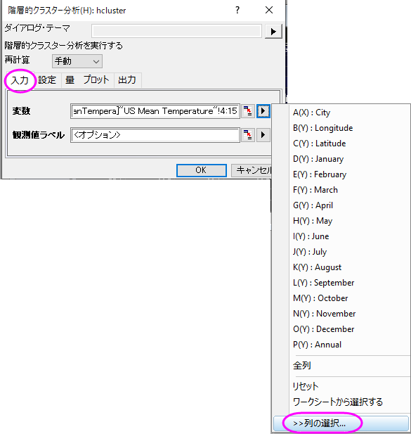
- 列ブラウザダイアログの下のパネルにある ... ボタンをクリックします。 データの範囲を1から100に設定します OKをクリックします。
- 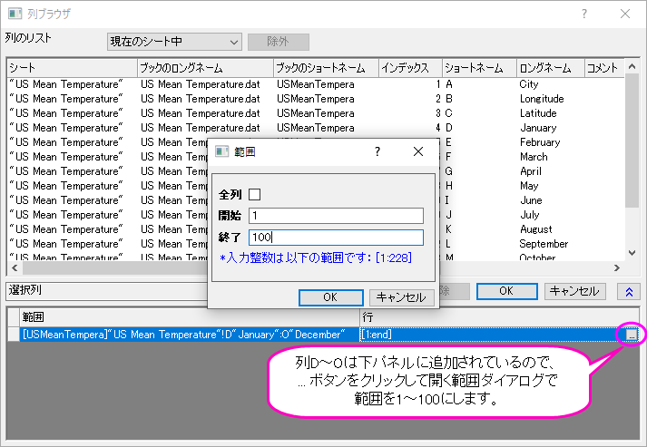
- 設定タブをクリックし、クラスターが観測値に設定され、クラスターの数が１になっていることを確認します。 クラスター方法で最長距離を選び、OKをクリックします。
- 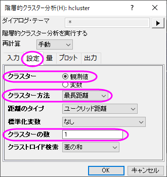
- Cluster 1シートに移動します。結果の樹形図を考慮して、全体を5グループに分けることにします。
- 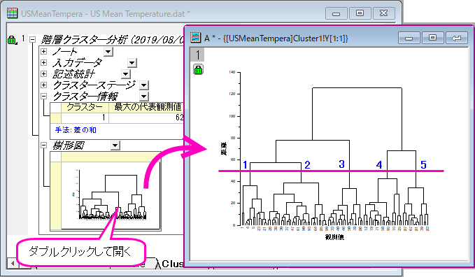
- 樹形図についているカギのアイコンをクリックし、パラメータを変更をコンテキストメニューから選びます。
- 設定タブでクラスターの数を５にし、量タブ内にあるクラスター中心のチェックを付けます。OKをクリックします。
- 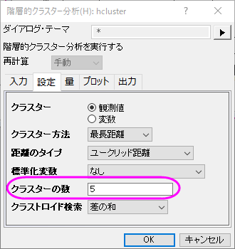
- 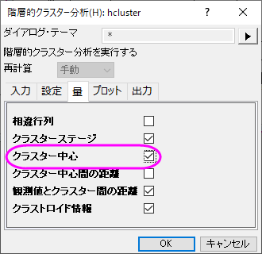
- 結果の樹形図ではどのように観測値がクラスター分けされているかよくわかります。レポートシート内の樹形図をダブルクリックするとグラフウィンドウとして開くことができます。ここで、樹形図にテキストラベルや矢印の追加といった編集を加えることができ、グラフウィンドウの右上にある閉じるボタン
 をクリックするとレポートシートの埋め込みグラフに戻せます。
をクリックするとレポートシートの埋め込みグラフに戻せます。
- 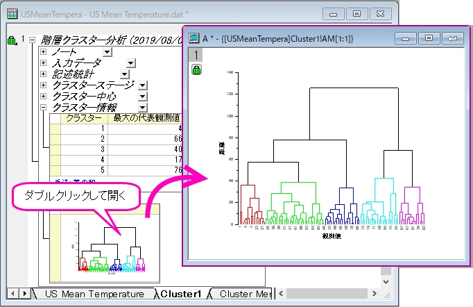
- 樹形図の一部分を抜き取ってみたい場合、クリックしてその部分を選択し、右クリックして新しいウィンドウにブランチを複製を選択します。これにより、枝分かれした部分のみが新しいグラフウィンドウに表示されます。
- 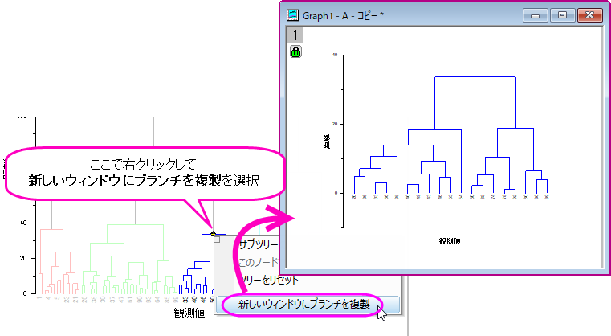
 | - Origin 2019b以降、hclusterダイアログのプロットタブに、樹形図のY軸に類似性を表示するためのラジオボタンが表示されます（デフォルトは距離です）。
|
元のデータをK-means法クラスターで分析する
- Cluster1ワークシートのクラスター中心を右クリックし、コンテキストメニューから新しいシートとしてコピーを作成を選びます。新しく作成されたクラスター中心シートを初期のクラスター中心としてK-means法クラスター分析を行います。
- 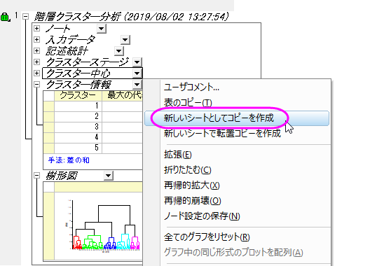
- 元のデータ(US Mean Temperatureワークシート)に戻り、列Dから列Oを選択します。メニューから統計：多変量解析：K-means法クラスター分析を選びます。
- オプションタブの初期のクラスター中心を指定するにチェックを付けます。 初期のクラスター中心の隣にある、ワークシートから選択するのボタン
 を押します。これにより、ダイアログが小さくなります。
を押します。これにより、ダイアログが小さくなります。
- クラスター中心シートに行き、列Dから列Oを選択します。 小さくなったダイアログにあるボタンをクリックしてダイアログを元に戻します。
- プロットタブ内でグループグラフを選択します。X範囲の隣にある、ワークシートから選択するボタンを押します。これにより、ダイアログが小さくなります。元のワークシートUS Mean Temperatureに戻り、列(B):Longtitudeを選択します。 小さくなったダイアログにあるボタンをクリックして元に戻します。
- Y範囲の隣にある三角形ボタンを選び、C(Y)：Latitudeを選びます。 OKをクリックします。
- 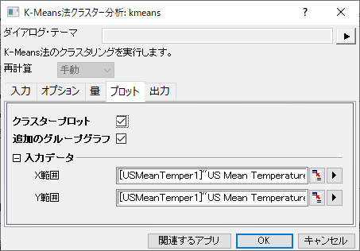
- K-Means Plot Data1ワークシートをアクティブにします。 観測データは各都市の緯度に対応した5つのクラスターにまとめられたことが分かります。
- 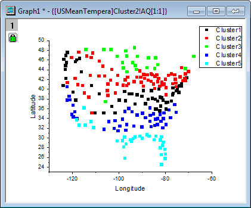
| 必要に応じて、さらなる操作を行うために、クラスタメンバーシップ列の出力先を入力データの隣などにすることもできます。
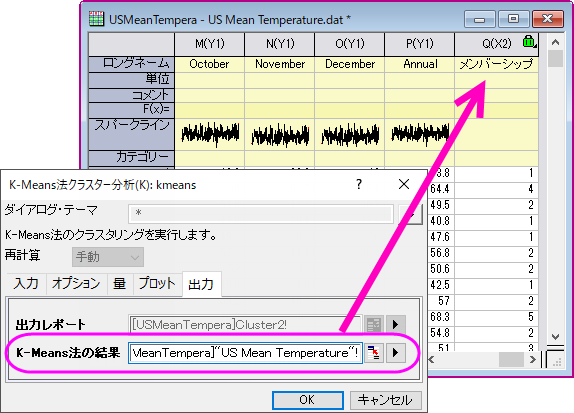
|